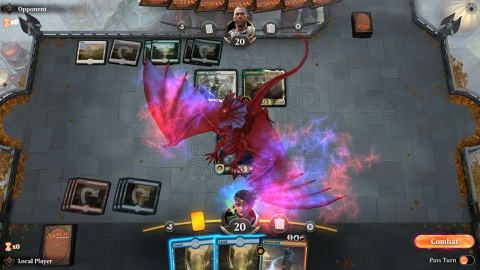

Coming Back to Magic
editors note: two things have changed in this time. i’ve quit and come back to magic two more times. and a mac client for Magic Arena has been released. ^.^
I left Magic about two years ago. It was a slow fade, and once I was done I thought I was out. I thought I quit this Cardboard Crack
OH NO
You don’t just leave Magic.
And I’m so glad I’m back.
Backstory. I stopped playing Magic about two years ago mostly due to money and time. I couldn’t justify the entry fee, or the time commitment every Friday. So I stopped going. I still kept up with some news, but without playing, that slowed down too. I couldn’t play Magic Online, because that is a steaming pile of garbage(more on that later) and Magic stopped being a part of my life. And when I finally wanted to get back into it, my LGS shut down.
I was deep into Magic. Like… deep in the competitive circle. My LGS was one of the most competitive stores in all SoCal. And with it shutting down, I felt like even if I wanted to start again, I couldn’t. Most other LGSs in my area(which were still 30 minute drive from me) were really casual, and none of the people I had become friends with went to them. And the nearest “competitive” store, where most of the players moved to, was an hours drive away. I did not have a chance to get back into Magic even if I wanted to. A local GP passed and I didn’t go. I would go to every major event in SoCal beforehand.
Then came Magic Arena.

Magic Arena is a brand new client designed by Wizards of the Coast to play Magic online. Magic Arena is also currently in Open Beta, but I’ve been playing since the closed beta. And it has revived in me a love of Magic I thought I lost a while ago. The other online offerings were bad. So I touched no online way to play Magic until Arena. And Arena is something else. I was skeptical at first, because the last attempt was really bad(people are still crying about MTGO v4). But boy was I wrong. The experience is smooth, the gameplay exceptional, it has a very Apple-like sense of Discoverability where features you don’t need will be barely hidden, but when you finally need it they’ll be out in the open. It is full Magic with all the insane rule complexities of Magic, but with a design and interface that is stellar for both new players and veterans.
But all this is just praising the client itself, what I really am here to do is talk about how it helped me rediscover a love I thought I lost. I had tried, in the time I was away from Magic, to fill that void. I played Hearthstone religiously for a few months. But it lacked a depth that Magic had. I tried MTGO, but the economy is a direct mirror of paper MTG for absolutely no reason and the actual program looks like it’s written for Windows 95, and has stability to match. But here was a version of Magic that captured everything that made paper Magic so wonderful.
Magic is a game I will praise until the end of time. It is so well designed, and the R&D Team at Wizards really does their best to make sure it is still relevant. In the 25 years it has been around, the power creep has been so well managed that eternal decks will still play cards printed 20+ years ago, along with cards made today. And you can feel it. Magic is a game you can teach any kid old enough to logic and you can have a casual game with, but is also deep enough to evoke 20+ years of game theory on, and still have emerging thoughts even today. No other game, at least that I’ve found, has that. It is a game that massive communities have built around, a game that continues to gain fans. And Arena is the first time a program has captured this.
It is still early on. It is a Beta after all. Simple things like friends lists are still being worked on, and actual tournaments seem a ways away. Plus no Mac client yet grumble grumble. But I just wanted to sing praises to the game that got me back into Magic.
Image Courtesy of Wizards of the Coast